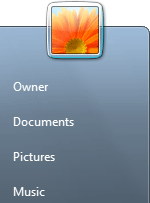
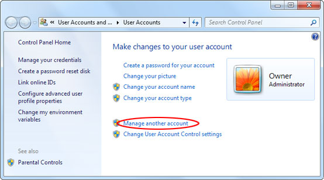
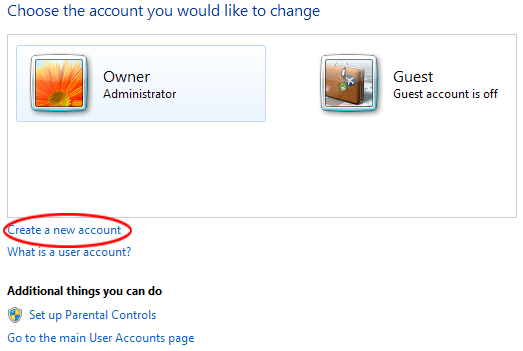
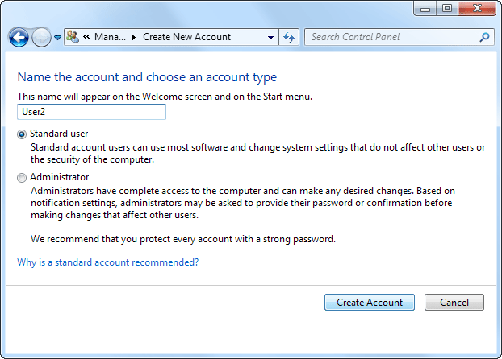
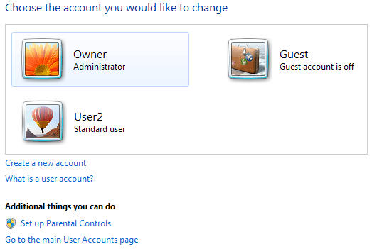
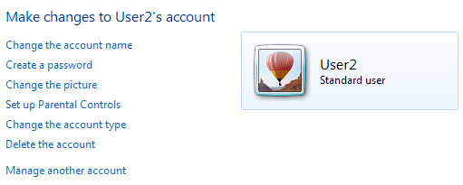
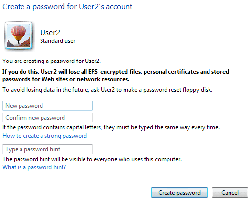

Free
computer Tutorials
|
Free
computer Tutorials
|
|
 back back |
Stay at Home and Learn | ||||
User Accounts in Windows 7If you have more than one person using the computer it makes sense to create a user account for them. That way, they can have their own backgrounds, themes, internet settings, etc. To create a new account, click your picture on the Start menu:  This will open up the following screen:  Click on the link that says "Manage another account" and you'll see this screen:  There are already two accounts set up here. One is a Guest account, and the other is an Administrator account. If an account is set up as Administrator then you have full control of what happens on the computer. The other type of account is called a Standard account. This is the type of account you should set up for other people, as it means they don't have full control on the computer. For example, if they wanted to install software, they would have to type in an Administrator's password to do so. Which means they'd have to ask you. This makes your computer more secure than it otherwise would be. (Only Administrators can set up accounts for others.)
So to create a new account, click on the link "Create
a new account", which is circled in red above. You'll then see
a new screen:  Type a name for the account in the text box. (We'd just called ours User2.) Keep it on the default option, Standard user. Then click the Create Account button at the bottom. You'll then be taken back to the account page:  As you can see the new account is created, along with a random picture (a balloon, in this case). The Owner account will still be selected, however. Click on your new account and you'll be able to change some settings for it:  "Change the account type" means setting it to either a Standard user or an Administrator. But you can create a password for this account by clicking the link. You'll then be taken to the password screen:  You can ignore all the dire warnings if this is a new account, as they won't have any encrypted files, certificates or website password. But type a password, and a password hint. Then click the button at the bottom "Create Password". You'll then be taken back to the account options.
In the next part we'll take a look at Parental Controls.
Parental Controls in Windows 7 >> |
|||||
|